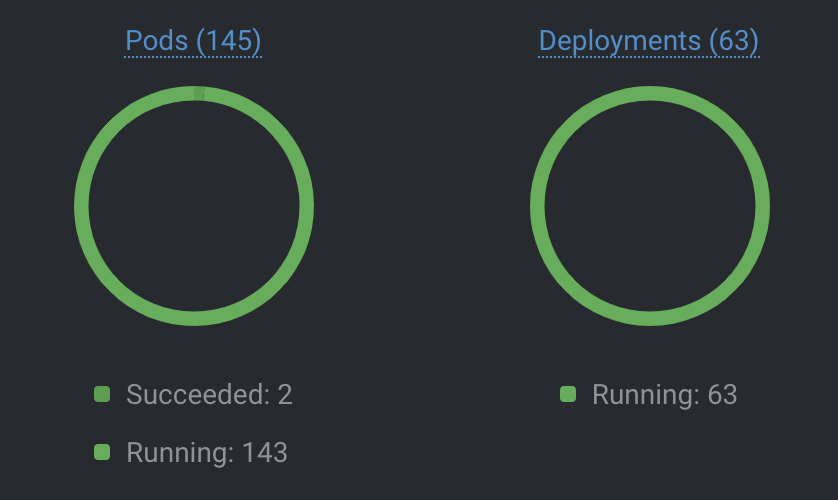
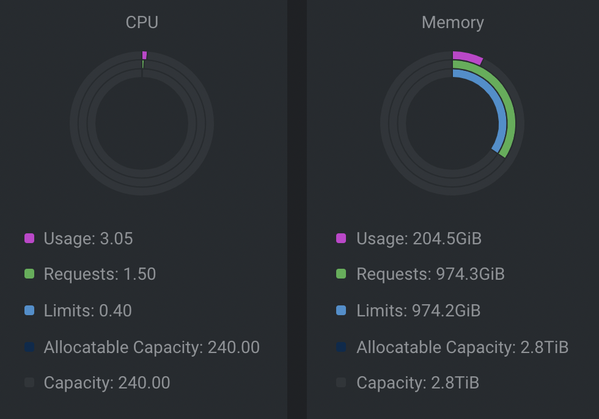
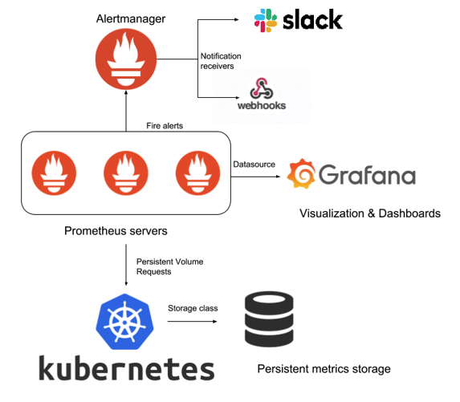
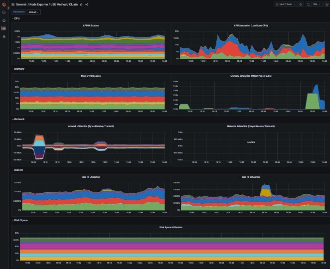

<!DOCTYPE html>
<html lang="en">
  <head>
    <meta charset="utf-8" />
    <meta name="viewport" content="width=device-width, initial-scale=1.0, maximum-scale=1.0, user-scalable=no" />

    <title>Exploring IRSA Kubernetes</title>
    <link rel="shortcut icon" href="./favicon.ico" />
    <link rel="stylesheet" href="./dist/reset.css" />
    <link rel="stylesheet" href="./dist/reveal.css" />
    <link rel="stylesheet" href="./dist/theme/sky.css" id="theme" />
    <link rel="stylesheet" href="./css/highlight/base16/zenburn.css" />


  </head>
  <body>
    <div class="reveal">
      <div class="slides"><section  data-markdown><script type="text/template">

#### Introduction to IRSA Kubernetes


</script></section><section  data-markdown><script type="text/template">
#### Design Objectives

- Multiple tenants
- Multiple projects
- Variety of environments
- Deployments from Firefly, IRSA UI, and IRSA Data System
- Environments: test, ops, and internal ops
</script></section><section  data-markdown><script type="text/template">#### Cluster Overview
<div style="text-align:left"> 
<p>OPS Cluster</p>
</div>



<div style="text-align:left">
<p>DEV Cluster</p>
 <li> Dynamic deployments
 <li> Multiple instances at different commit points
</div>
<!-- .element: class="fragment" -->
</script></section><section  data-markdown><script type="text/template">
#### Maintenance

- Regular maintenance on the host machines
- Complete update of Kubernetes software stack
  - Every 6 months (incremental updates)
  - Docker: Container runtime
  - kubeadm: tool used to build Kubernetes clusters
  - Weave Net: Container Network Interface (CNI)
  - Ingress controller
- Kubernetes cordon
</script></section><section  data-markdown><script type="text/template">

#### Monitoring Tools




- Zabbix and Xymon
- Prometheus
- Grafana
- Slack notification
- Dashboards

</script></section><section  data-markdown><script type="text/template">
#### Automation

<p>
Typical GitOPS workflow
</p>


</script></section><section  data-markdown><script type="text/template">
#### Our Deployment Process


- Manual execution of Jenkins pipeline
- Publishing chart to local Helm Chart Repository

</script></section><section  data-markdown><script type="text/template">
#### What is irsajenkins

- Containerized and managed as code in Git
  - Plugins and configuration built into the image
- Support Docker/Compose (build/publish)
  - Isolation, consistency, portability
- Support Helm (create/publish)
- Automatically build and test on merge
- Slack notification
</script></section><section  data-markdown><script type="text/template">
#### What is Argo CD

<p>
Automated GitOps tool for managing and deploying Kubernetes applications.
It aligns your cluster with Git-based declaratively-defined infrastructure, effectively automating application deployment.
</p>


</script></section><section  data-markdown><script type="text/template">
#### Argo CD Dashboard


</script></section><section  data-markdown><script type="text/template">
#### Argo CD Application


- Force Sync
- Update Kubernetes manifest
- View application logs
</script></section><section  data-markdown><script type="text/template">
#### Conclusion
<p>
In summary, IRSA Kubernetes offers a robust solution for managing complex deployments across different environments.
We have firsthand positive experiences with the platform and that's why we're here to share our insights and knowledge with you today.
Thank You!
</p>

Any questions?


<style>
  p {
      font-style: italic;
      font-size: large;
  }
  
  .reveal h4 {
      text-transform: unset;
  }
</style></script></section></div>
    </div>

    <script src="./dist/reveal.js"></script>

    <script src="./plugin/markdown/markdown.js"></script>
    <script src="./plugin/highlight/highlight.js"></script>
    <script src="./plugin/zoom/zoom.js"></script>
    <script src="./plugin/notes/notes.js"></script>
    <script src="./plugin/math/math.js"></script>
    <script>
      function extend() {
        var target = {};
        for (var i = 0; i < arguments.length; i++) {
          var source = arguments[i];
          for (var key in source) {
            if (source.hasOwnProperty(key)) {
              target[key] = source[key];
            }
          }
        }
        return target;
      }

      // default options to init reveal.js
      var defaultOptions = {
        controls: true,
        progress: true,
        history: true,
        center: true,
        transition: 'default', // none/fade/slide/convex/concave/zoom
        slideNumber: true,
        plugins: [
          RevealMarkdown,
          RevealHighlight,
          RevealZoom,
          RevealNotes,
          RevealMath
        ]
      };

      // options from URL query string
      var queryOptions = Reveal().getQueryHash() || {};

      var options = extend(defaultOptions, {"transition":"zoom"}, queryOptions);
    </script>


    <script>
      Reveal.initialize(options);
    </script>
  </body>
</html>
